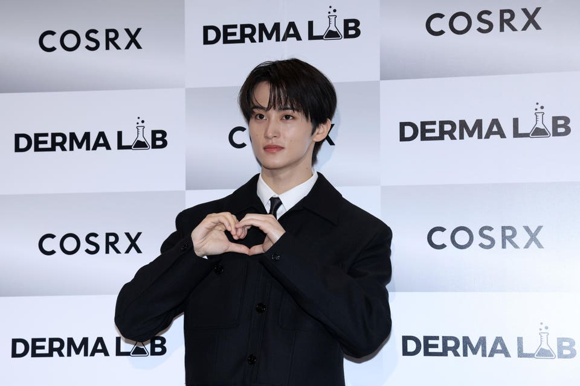

Mark, Ten & Heeseung: Why K-Pop's Biggest Stars Are Walking Away

The K-pop industry is experiencing an unprecedented wave of departures. In the past month alone, Mark Lee, Ten, and Heeseung have all announced significant career changes.
Mark's exit from SM Entertainment and NCT after a decade-long tenure marks the most high-profile departure, but he's far from alone. Ten announced he would leave SM Entertainment while maintaining his position within NCT, and Heeseung's recent announcement suggests more changes may be coming.
Changing Industry Dynamics
Industry insiders point to several factors driving these departures. Long-term contract disputes, desire for creative freedom, and the grueling schedules of idol life are all contributing factors. "Idols are increasingly aware of their value and are demanding more control over their careers," one entertainment executive explained.
The rise of social media has also empowered idols to build personal brands independently of their agencies.
Contract Length Disputes
Many of the departing stars have cited contract length as a major issue. The standard seven-year contract, originally designed for rookie artists, often doesn't serve established idols who have outgrown the structure.
Fans React
Fans have responded with a mixture of support and anxiety. While many celebrate artists' freedom to pursue their desired paths, others worry about the implications for their favorite groups.